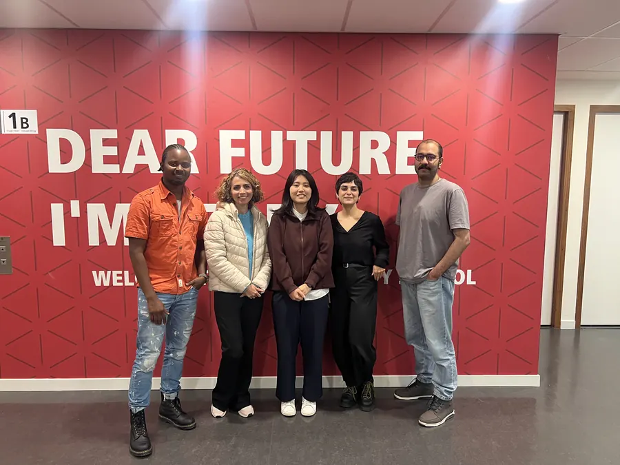
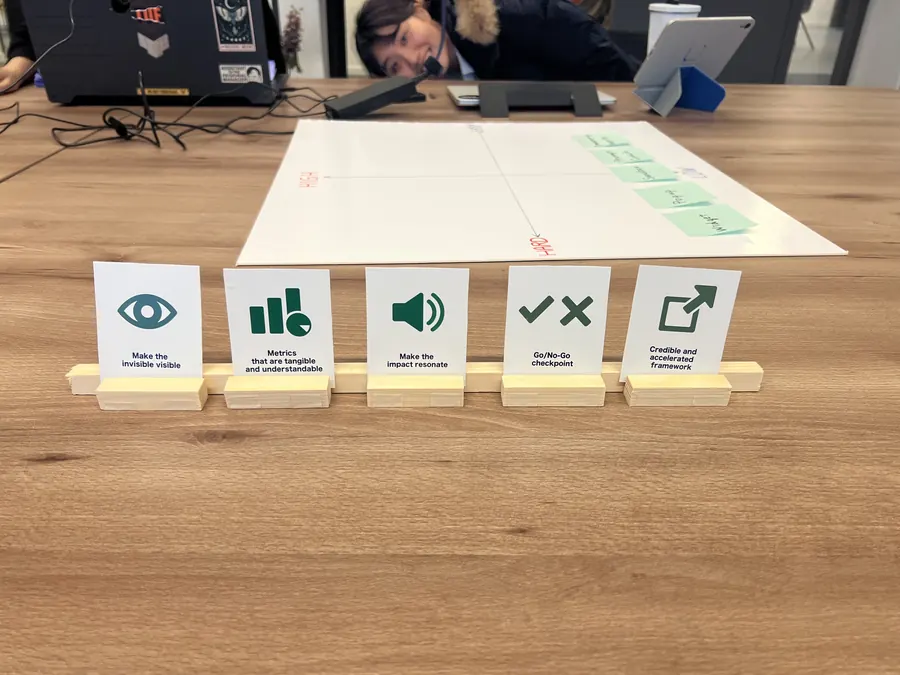
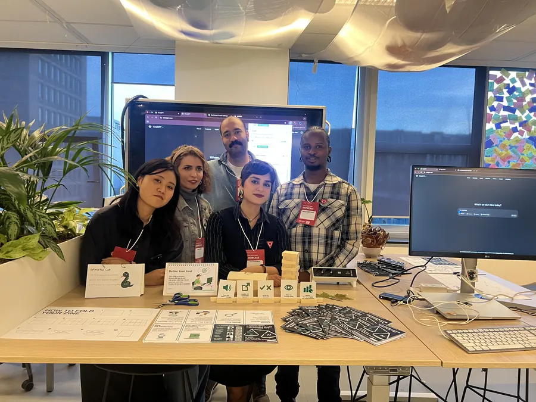

Sustainable AI Framework
Balancing the benefits of generative AI with its environmental cost — a decision framework and prototype for the Dutch Ministry of Finance.
AI GovernanceSustainabilitySDG 12 & 13Prototyping
The challenge
Generative AI is becoming government infrastructure — but every prompt has a footprint. How does a finance ministry adopt AI responsibly without greenwashing or grinding innovation to a halt?
My approach
- Mapping the environmental footprint of generative AI end-to-end — from Scope 2 electricity to Scope 3 hardware and data-centre water
- Building a sustainability assessment framework for concrete AI use cases, framed against CSRD/ESRS disclosure logic
- Prototyping decision-support tools with real users — from strategy-setting managers to everyday prompters
- Aligning everything with UN SDG 12 and SDG 13
Where it stands
- Working decision-support prototype — try the EcoPrompt Coach demo below
- Framework tested in public research sessions and demo days in Amsterdam


